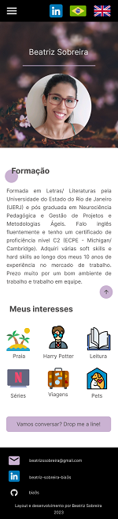

Case Study: My Buddy
Desafio: criar uma solução digital para auxiliar na adoção de animais resgatados por ONGs.
Solução: criação de um aplicativo mobile onde a pessoa que irá adotar possa encontrar ONGs por bairros e ver as informações dos animais que estão para a doação. Além dessa função principal, as pessoas poderiam fazer doações de itens diversos e se voluntariar para trabalhar nessas ONGs.
Entregáveis
- Matriz CSD
- Proto-persona e persona
- User flow
- Wireframes
- Quadro de voz
- Protótipo navegável

Mobile Design


Acesse o figma
Acesse o figma